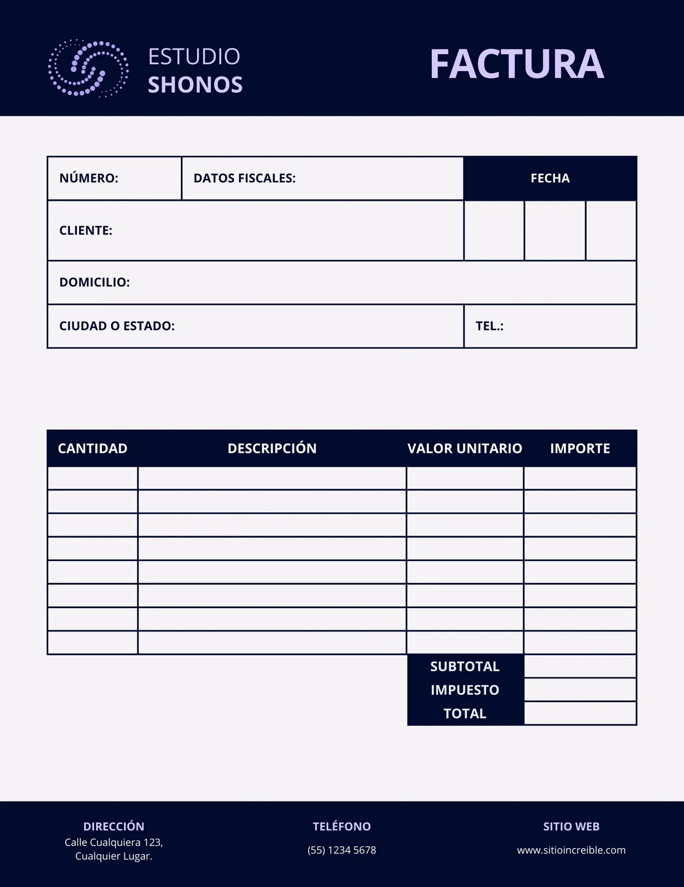
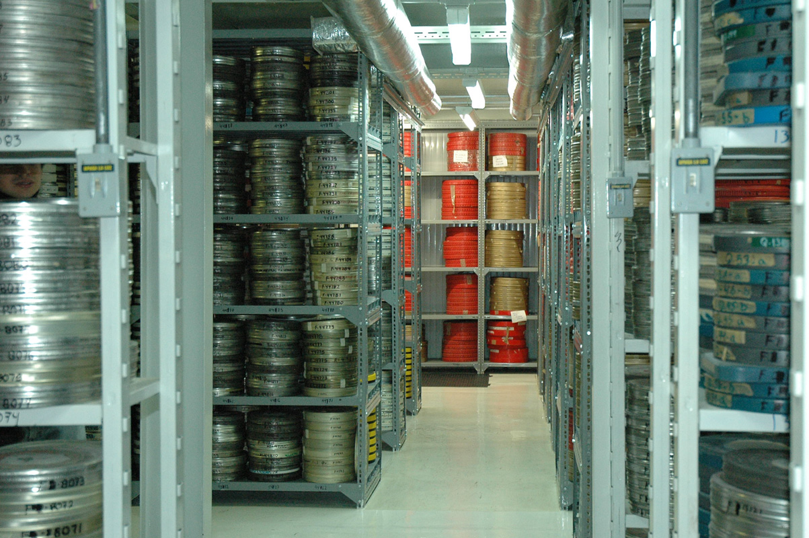

-

Factura: Cuenta en que se detallan con su precio los artículos vendidos o los servicios realizados y que se entrega al cliente para exigir su pago.
[Fuente] -
Fantasear: Imaginar algo con la fantasía. Fantasia: Facultad que tiene el ánimo de reproducir por medio de imágenes las cosas pasadas o lejanas, de representar las ideales en forma sensible o de idealizar las reales
[Fuente 1][Fuente 2] -
Fiebre: Fenómeno patológico que se manifiesta por elevación de la temperatura normal del cuerpo y mayor frecuencia del pulso y la respiración.
[Fuente] -

Filmoteca: Lugar donde se conservan los filmes para su estudio y exhibición.
[Fuente] -

Frenar: Moderar o parar con el freno el movimiento de una máquina o de un carruaje.
[Fuente]